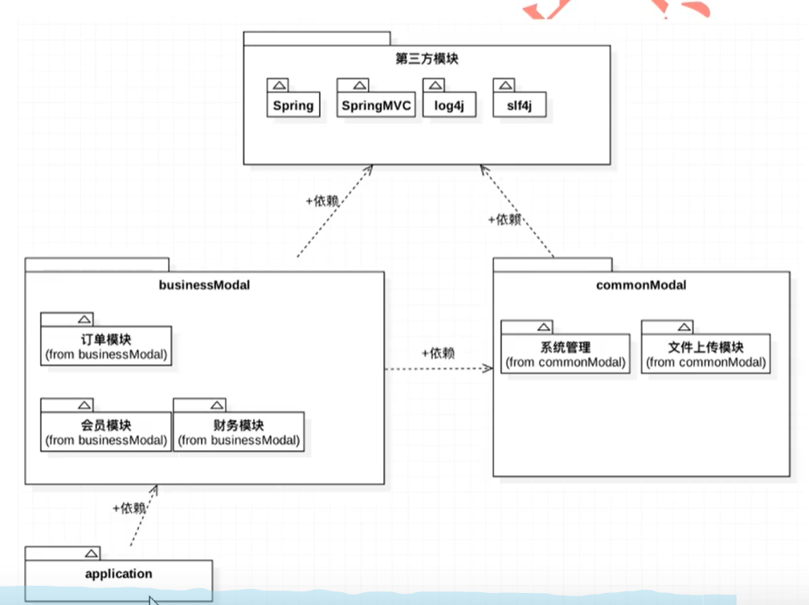

业务背景：

使用Maven管理以上的结构：
Maven管理多模块应用的实现是互联网项目中多使用分布式开发，那么每个独立的服务都会使用独立的项目进行维护，这样就需要多模块应用管理，来实现项目的高度统一。
1、第一种实现方式
项目名称：maven-modules-project
完成功能：使用IDEA完成 Maven管理多模块的应用开发
指定父工程：
Maven父工程必须遵循一下两点要求：
1、packaging标签的文本内容必须设置为pom
2、把src目录删除掉
注：1、package标签的作用是指定打包的方式：
默认为jar，如果pom文件没有指定package标签，那么 默认就是jar。
2、pom文件是项目对象模型（Project Object Module），该文件是可以被继承的。Maven多模块管理其实就是让它的子模块的pom文件继承父工程的pom文件。
具体步骤：
第一步：创建空项目
第二步：创建父工程
第一步：创建一个Maven工程
第二步：设置pom文件package标签为pom
第三步：删除src目录
第三步：创建子工程
---->New module
---->Parent (指定父工程)
---->指定ArtfactId(保持唯一性)
子模块创建完成后,它的pom文件中会含有：
<parent>标签,该标签下的<relativaPath>标签指定的是父工程的pom文件的相对路径
<modelVersion>标签
<artifactId>标签
要是创建的时候没有指定父工程，之后可以指定:
设置<parent>标签
<parent>
<groupId></groupId>
<version></version>
<artifactId></artifactId>
<relativePath></relativePath>
<parent>
第一种方式：
子模块继承父工程所有依赖。（父工程添加的依赖，所有的子模块会无条件的去继承）
缺点：冗余：
改进：父工程要加强管理子模块的所有依赖
实现：将父工程里的所有依赖添加到
<depenencyManagement>标签下
子模块需要声明需要继承的依赖:
添加<groupId></groupId>
<artfactId></artfactId>
注意：如果子模块指定依赖的版本号，那就不会去继承父工程的依赖
父工程管理依赖的版本号
通常管理依赖版本号的标签名名称由：项名名称+字段version组成
<properties>
<junit-version>4.10</junit-version>
</properties>
<dependencyManagement>
<dependencies>
<groupId>junit</groupId>
<artifactId>junit</artifactId>
<version>${junit-version}</version>
</dependencies>
</dependencyManagement>
第二种方式：
将工程添加到父工程里面
第一步：创建父工程
第二步：创建子工程
Add as module to-->父工程
Parent--------------->父工程

这种方式：
1、子项目的<parent>标签下不会有<relativaPath>标签，因为子工程和父工程的pom文件在同一级目录。
2、父工程的pom文件中会有一个<modules>标签,用来表示父工程包含的所有子模块(并不会去添加它的孙子模块)。
<modules>
<module>子项目名</module>
</modules>
子工程会继承父工程的编译插件；
第三种方式：第一种和第二种方式的混合使用。

第二种方式：
<modules>
<module>子项目名</module>
</modules>
就是聚合关系，聚合关系目的是为了快速的构建项目，（继承是为了简化依赖的书写）<module>子项目名</module>下的项目会自动构建。
继承和聚合都需要 父工程是pom工程。
注意：
dependencyManagement 只是声明依赖，并不会引入。因此在pom工程中有些依赖如果本地仓库中没有，idea则会显示爆红（爆红表示本地仓库中没有该jar包），如果有子项目应用该依赖，才会从网络下载。